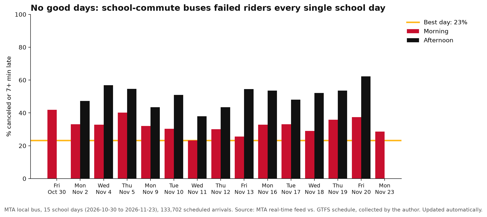
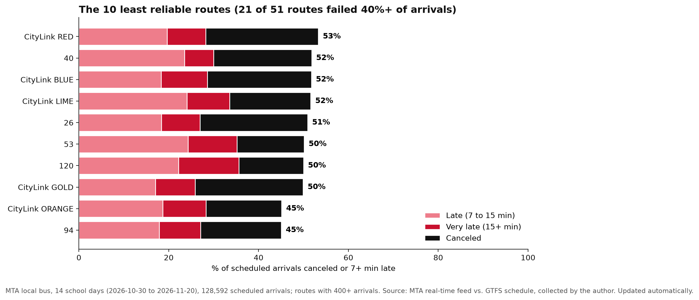
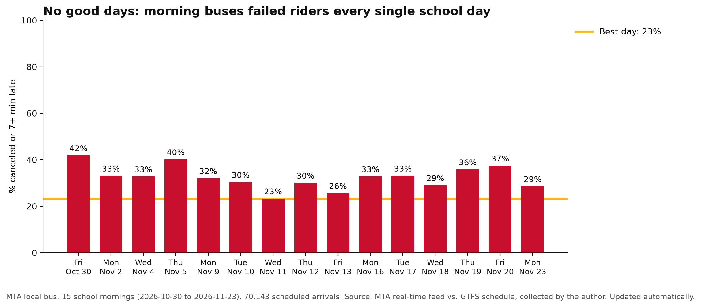
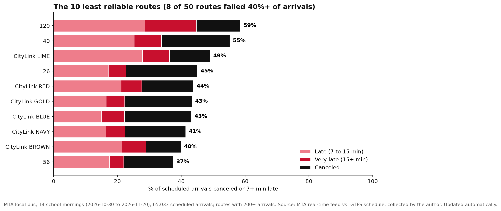
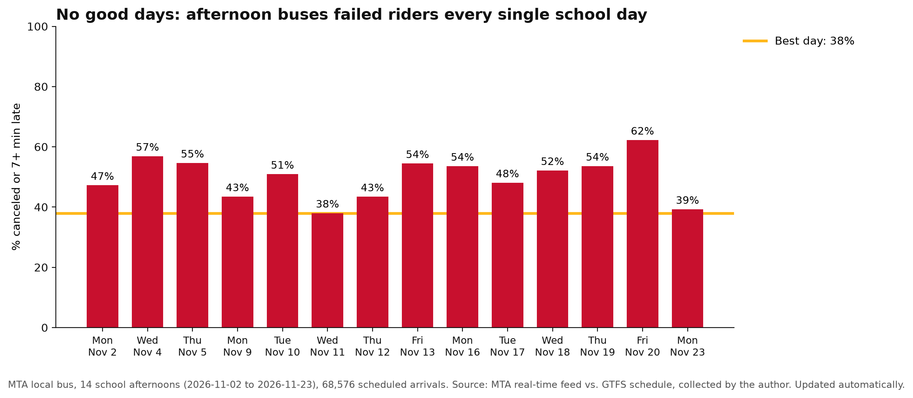
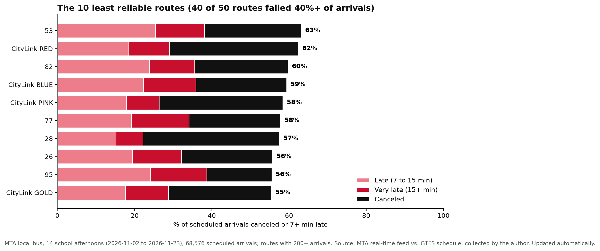
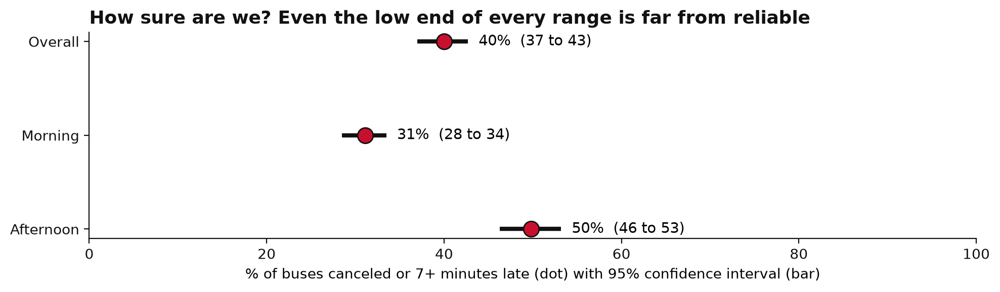
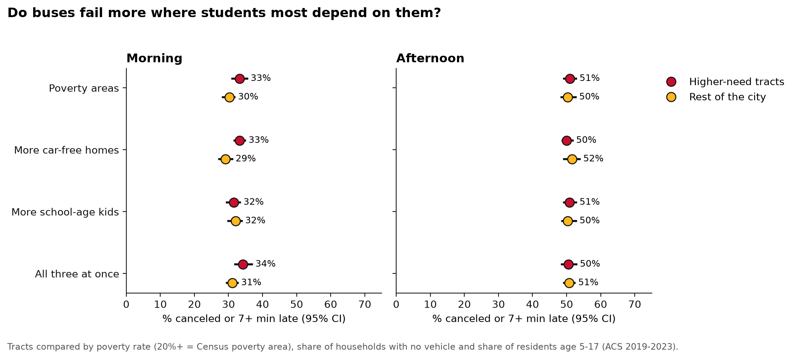
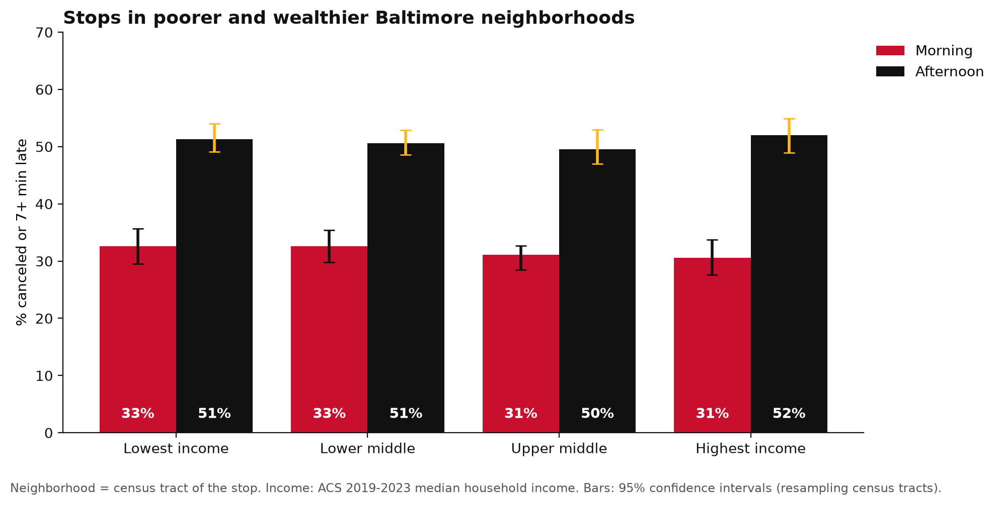

Delays and cancellations were more common in the afternoon
Across 14 school days, 30% of morning arrivals with a known outcome and 48% of afternoon arrivals with a known outcome were canceled or more than 7 minutes late. From 8:00 to 9:00 a.m., 54% of morning arrivals with a known outcome were on time.
How arrivals with a known outcome turned out
- Loading…
The charts show outcomes by scheduled arrival time. The chart and headline calculations include recorded arrivals and cancellations flagged by MTA.

More evidence: you could not plan around these buses
A “regular bus” is the same route, direction, stop and scheduled time every school day, the bus a student would plan around. Only buses with a known outcome on at least 8 days count.


How morning arrivals with a known outcome turned out
- Loading…
The on-time share fell from 75% in the 6:00 a.m. half-hour to 54% between 8:00 and 9:00 a.m.

More evidence: you could not plan around these buses
A “regular bus” is the same route, direction, stop and scheduled time every school day, the bus a student would plan around. Only buses with a known outcome on at least 8 days count.


How afternoon arrivals with a known outcome turned out
- Loading…
The on-time share fell from 56% in the 2:00 p.m. half-hour to 46% between 3:00 and 4:00 p.m., when many students head home.

More evidence: you could not plan around these buses
A “regular bus” is the same route, direction, stop and scheduled time every school day, the bus a student would plan around. Only buses with a known outcome on at least 8 days count.


The charts and headline figures refresh as new commute data is processed.
How strong is the evidence?
Any sample of days could be a little better or worse than usual. A 95% confidence interval gives the range the true rate most likely falls in. We built it by bootstrapping: we re-drew the school days at random thousands of times and recalculated the rate each time. Whole days are re-drawn because buses on the same day share weather, traffic and staffing.

A confidence interval covers chance from which days were sampled. It does not fix measurement limits, such as GPS gaps, which are covered in the strict count and limitations below.
Explore the city, neighborhood by neighborhood
Each shape is a census tract, an area of about 4,000 people, labeled with the Baltimore neighborhoods it covers. Its color shows the share of buses at its stops that were canceled or more than 7 minutes late. Hover over a tract, or tap or tab to it, to see its numbers.
Explore the Baltimore City neighborhood reliability map
Gray tracts had fewer than 100 bus arrivals with a known outcome, too few to rate fairly. Many have no timepoint stop. Income and poverty: American Community Survey, 2019 to 2023. Average minutes late counts buses that ran (early buses count as negative).
Where students most depend on the bus
Students are most likely to need MTA buses where families are poorer, fewer households have a car, and more school-age children live. Each stop was matched to its census tract, and each tract to three Census measures (American Community Survey, 2019 to 2023):
- Poverty: the share of residents below the poverty line. The Census Bureau calls a tract at 20% or more a poverty area.
- No car: the share of households with no vehicle. Tracts above the city median count as "more car-free homes".
- School-age children: the share of residents age 5 to 17. Tracts above the city median count as "more school-age kids".

| Loading… |
A more careful test. Higher-need and lower-need areas are served by different routes at different times, so a raw comparison can mislead. A logistic regression compares stops on the same route, in the same commute and half hour. The odds ratio reads like this: 1 means no difference, above 1 means buses fail more often in the higher-need tracts, and below 1 means less often. If the 95% interval includes 1, the data cannot tell the groups apart.

Limits: these are neighborhood averages, not individual riders. We cannot tell whether the people waiting at a given stop are poor, car-free or students (the ecological fallacy). Census figures are estimates with their own margins of error, and a bus route crosses many tracts.
Reliability by route and stop
Routes ranked by disruption rate
The default ranking uses the share of scheduled stop visits that were more than 15 minutes late, canceled, or had no real-time record. The table includes routes with at least 20 measured, canceled, or unrecorded stop visits. The on-time rate uses measured arrivals only.
| Loading… |
Stops with the highest drive-past rates
The table shows up to 25 stops with the highest drive-past rates among stops with at least 20 observed visits. A bus may pass a stop when nobody is waiting. The tracker cannot tell whether anyone was waiting to board.
| Loading… |
What unreliable service means for students
For students who rely on MTA buses, a delay or cancellation can mean missing the start of class or waiting longer after dismissal. The tracker measures bus service. It cannot measure how often students arrived late or how long they waited.
Data and methods
- The MTA publishes its bus schedule (GTFS) and a real-time feed with vehicle locations and trip updates (GTFS-Realtime). Both are listed on the MTA Developer Resources page.
- During monitored school commute windows, the tracker polls the real-time feed about every 30 seconds. The morning window runs from 6:00 to 9:30 a.m. and the afternoon window from 2:00 to 5:30 p.m., Baltimore time.
- The tracker saves arrival records for each monitored commute window. The data files are public on GitHub.
The analysis
The full analysis is in a commented Google Colab notebook. It loads the commute files, cleans them, calculates the headline results, and generates the charts.
Definitions
- On time
- The MTA's own standard: no more than 2 minutes early and no more than 7 minutes late, measured at scheduled timepoint stops.
- Early
- The bus left a timepoint more than 2 minutes ahead of schedule. A student who arrived on time could miss it.
- Late / very late
- Late means more than 7 minutes and up to 15 minutes after the scheduled time. Very late means more than 15 minutes after the scheduled time.
- Canceled
- The MTA's own feed marked the trip canceled.
- Couldn't confirm
- The bus trip was running but the tracker could not pin down when it reached the stop (a GPS gap, the trip stopped reporting, or an estimate fuzzier than 2 minutes). The strict count gives these no credit; the chart leaves them out.
- No record
- A scheduled trip with no real-time record. This can reflect a missed trip or a tracking gap. It counts against the bus in the strict count and the route disruption rate, and is left out of the charts and headline percentages.
- Drove past
- The tracker infers a drive-past from vehicle positions and speed near the stop when the feed shows no stop. Some visits, including slow passes, are classified as unclear.
Limitations
- The arrival analysis counts scheduled stop arrivals. A single trip can contribute multiple arrivals.
- The number of monitored mornings and afternoons can differ. Each chart shows the dates covered.
- The 8:00 to 9:00 a.m. and 3:00 to 4:00 p.m. intervals are reference windows. Actual start and dismissal times vary by school.
- The tracker covers general MTA bus service during school commute hours. It does not identify student riders or individual journeys.
- Arrival times are estimates from periodic feed reports. Their precision depends on the time between usable updates.
- The results cover the school days collected so far, not a full school year.
Sources
- Maryland Transit Administration. (2026). Local bus GTFS schedule [Data set]. https://feeds.mta.maryland.gov/gtfs/local-bus. Listed on MTA Developer Resources: https://www.mta.maryland.gov/developer-resources
- Maryland Transit Administration. (2026). Real-time vehicle positions and trip updates (GTFS-Realtime), provided through Swiftly [Data feed], collected by the author every 30 seconds during school commute windows, Oct. 30 to present. Listed on MTA Developer Resources (above).
- Duvall, A. (2026). MTA Accountability Tracker: school commute records [Data set and code]. GitHub. https://github.com/TbilKitty/MTA_Accountability_Tracker. Analysis notebook: Google Colab.
- U.S. Census Bureau. (2023). TIGER/Line shapefiles: Census tracts, Maryland [Data set]. https://www2.census.gov/geo/tiger/TIGER2023/TRACT/
- U.S. Census Bureau. (2024). American Community Survey 5-year estimates, 2019–2023: Tables B19013 (median household income), B17001 (poverty status), B25044 (vehicles available), B09001 (population under 18 by age) and B01003 (total population) [Data set]. https://api.census.gov/data/2023/acs/acs5
- Bishaw, A. (2014). Changes in areas with concentrated poverty: 2000 to 2010 (ACS-27). U.S. Census Bureau. (Definition of a poverty area: a tract where 20% or more of residents are below the poverty line.) https://www.census.gov/library/publications/2014/acs/acs-27.html
- Neighborhood names: City of Baltimore neighborhood boundaries (Open Baltimore) or Baltimore Neighborhood Indicators Alliance Community Statistical Areas, via ArcGIS Online. The exact layer used is recorded in the repository at data/reference/neighborhood_source.txt.
- Baltimore City Public Schools. School hours vary by school; see each school's page at https://www.baltimorecityschools.org. The 8:00 to 9:00 a.m. and 3:00 to 4:00 p.m. windows used here are the author's reference windows, not official bell times.
- Efron, B., & Tibshirani, R. J. (1993). An introduction to the bootstrap. Chapman & Hall. (Method for the confidence intervals; whole school days or census tracts are resampled.)
- Software: pandas, Matplotlib, statsmodels (Seabold & Perktold, 2010) and GeoPandas, in Python.